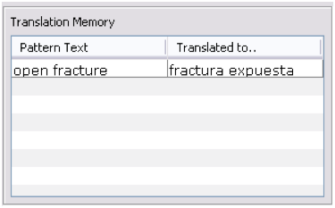

This windows displays similar semantic structures that have been already translated in order to maintain translation consistency.
Hide / Show button allows to collapse or display Similarity window according to user's preferences.

Searching for translation memory is performed on the source language only, as it is a guide for translation consistency. In the example shown below, the Translation Memory is stating that previously translated concepts with descriptions containing “open fracture” had been translated into Spanish as “fractura expuesta.” Therefore, any new concept to be translated containing “open fracture” should be similarly translated:

For example, if the new concept is “Open fracture of hand” the translation should be “Fractura expuesta de mano”.